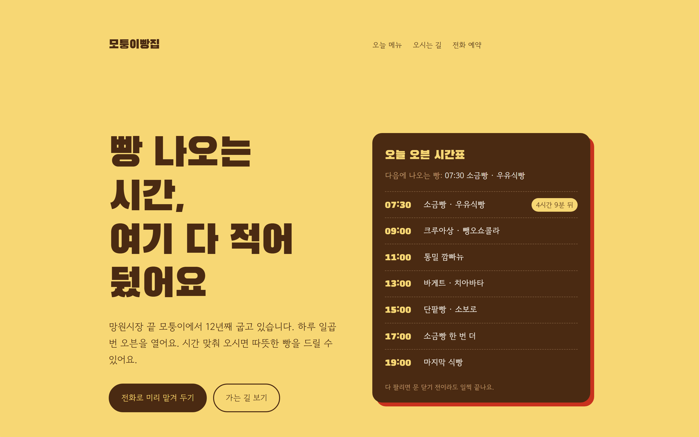
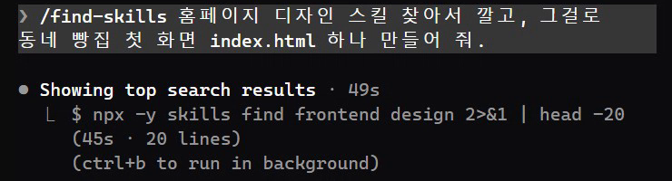
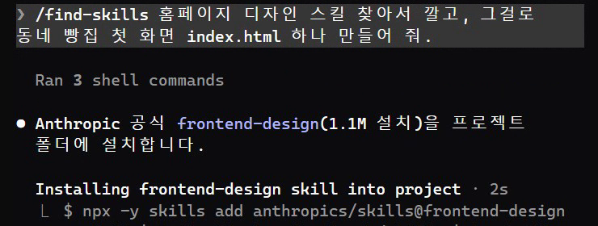
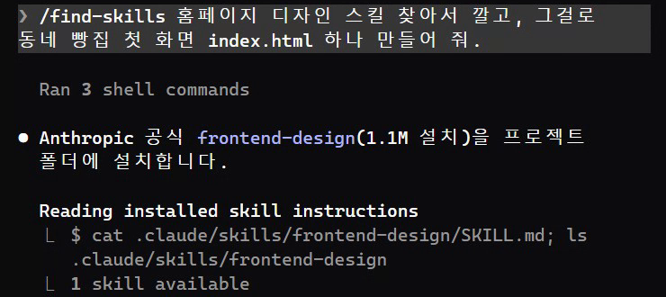
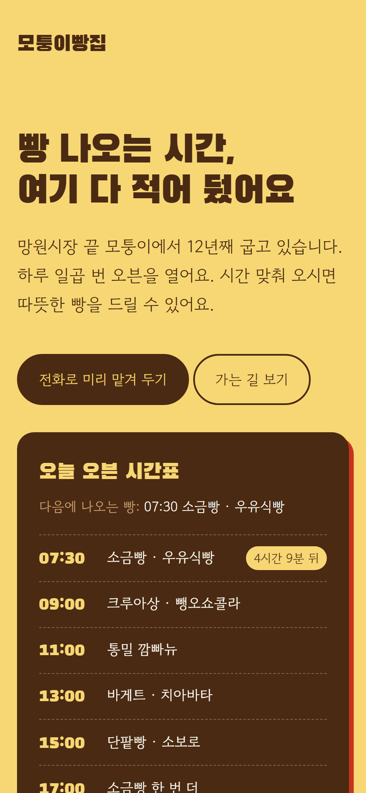

클로드 코드에 깔아 두면, '/find-skills 홈페이지 디자인 스킬 찾아 줘'처럼 할 일만 말해도 클로드가 알맞은 영어 검색어로 스킬을 찾고, 설치 수·만든 곳·깃허브 별로 걸러서 하나를 골라 이 폴더에 깔아 줘요. 스킬 사이트(skills.sh) 설치 순위 1위(11/17 기준 438만 번)이고 무료 오픈소스(MIT)예요. 아래는 저희가 빈 폴더에서 직접 돌린 화면이에요 — 위 그림은 찾아 깐 디자인 스킬로 바로 만든 빵집 첫 화면(시연용)이에요.

작업 폴더에서 터미널을 열고 아래 '복사해서 쓰기'의 설치 명령을 붙여 넣어요. 어디에 깔지(클로드 코드) 고르는 화면이 나오면 Claude Code를 고르세요. 설치 직전에 Gen·Socket·Snyk 보안 평가 표가 뜨는데, 'Safe'·'0 alerts'면 그대로 진행해요. 모든 폴더에서 쓰려면 명령 끝에 -g를 붙여요. 다 깔리면 작업 폴더에 .claude/skills/find-skills 폴더가 생겨요.
클로드 코드를 켜고 맨 앞에 /find-skills 를 붙인 뒤 할 일을 한국어로 적어요. 예: '/find-skills 홈페이지 디자인 스킬 찾아 줘'. 이름을 안 붙이면 클로드가 스킬을 찾지 않고 바로 일을 시작하는 경우가 많았어요.

클로드가 후보마다 설치 수·만든 곳·깃허브 별을 보고 하나를 골라요. 공식(anthropics·vercel-labs·remotion-dev 등)과 설치 1천 번 이상을 먼저 보고, 설치 수가 커도 저장소 별이 적거나 남의 것을 복사한 저장소는 빼요. 결과 메시지의 '고른 것·뺀 것'을 한 번 읽고 넘어가세요.

같은 대화에서 그대로 이어서 시키면 돼요. 예: '그걸로 동네 빵집 첫 화면 index.html 하나 만들어 줘'. 새로 깐 스킬이 안 보이면 클로드 코드를 다시 켜거나 /reload-skills 를 입력해요.


홈페이지 디자인 → 후보 22개 중 anthropics/skills@frontend-design(설치 112만). 말로 영상 만들기 → 설치 100만 번 넘는 같은 이름 스킬 여럿(깃허브 별 25·7·4개)은 빼고 remotion-dev/skills(별 7,333)의 리모션 공식 스킬. 광고 문구 → coreyhaines31/marketingskills의 ad-creative(14.8만)·copywriting(25.7만) 두 개. (11/17 숫자)
터미널에서 npx skills list 로 깔린 스킬을 보고, 필요 없는 건 npx skills remove <이름> 으로 지워요.
작업 폴더 터미널
npx skills add vercel-labs/skills --skill find-skills
아무 터미널
npx skills add vercel-labs/skills --skill find-skills -g
클로드 코드 입력창
/find-skills 홈페이지 디자인 스킬 찾아서 이 폴더에 깔아 줘
클로드 코드 입력창
/find-skills 말로 설명하면 영상 만들어 주는 스킬 찾아서 이 폴더에 깔아 줘
클로드 코드 입력창
/find-skills 인스타 광고 문구 잘 써 주는 스킬 찾아서 이 폴더에 깔아 줘. 고른 것·이유·뺀 것만 짧게 알려 줘
터미널
npx skills list
도움이 되셨다면
@ai.antenna.kr
에서 바로 쓰는 AI 활용법을 계속 올립니다.